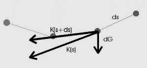

Mathematische Lösung
Mit Hilfe des physikalischen Modells gelingt es, eine Beziehung zwischen den infinitesimalen Grössen aufzustellen.
Zunächst sinkt die y-Koordinate der Kraft proportional zur durchlaufenen Kettenlänge s. Wir haben also
Ky = c + asDabei ist -a das Gewicht der Kette pro Längeneinheit. Die Konstante c bestimmt zusammen mit dem konstanten y-Anteil des Kraftvektors die Kraft im rechten Aufhängepunkt.
Wir setzen Kx = d
Weil die Kettenkurve und die Kraft die gleiche Steigung haben, ergibt sich für die Kettenkurve, die wir mit y(x) bezeichnen,
y'(x) = \(\rm\large\frac{dy}{dx} = \frac{c + as}{d}\)Differenziert man auf beiden Seiten nach x, so erhält man mit einer positiven Konstanten k=a/d
y''(x) = \(\rm\large\frac{d^2y}{dx^2} = \normalsize k\large\frac{ds}{dx}\)Hier wird ein wenig über die Schwierigkeit hinweggegangen, die mit der zweiten Ableitung zusammenhängt. Diese zweite Ableitung lässt sich nämlich nicht mehr ohne weiteres im obigen Bild mit infinitesimalen Grössen ablesen. Unsere simulierte Kettenlinie ist ja auch ein Streckenzug, der im kleinen keine zweite Ableitung hat.
Die Mathematiker zur Zeit von Leibniz hatten mit diesen Dingen die gleichen Schwierigkeiten. Sie überzeugten sich allerdings durch gründliche Überlegung von der Richtigkeit ihrer Rechnungen im Grenzübergang gegen 0. Ich warne davor, dies als Unexaktheit anzuprangern. Es gibt ausserdem verschiedene Wege, die obigen Überlegungen exakt zu machen.
Wegen ds = \(\rm\small\sqrt{dx^2+dy^2}\)
erhält man schliesslich die Differentialgleichung (in moderner Form geschrieben)
y''(x) = k\(\rm\small\sqrt{1+y'(x)^2}\)Die Lösung dieser Differentialgleichung für u=y' kann man mit Hilfe der Methode der Variablentrennung gewinnen. Diese Methode taucht übrigens bei Bernoulli zum ersten mal auf. Er schreibt (mit u=y')
\(\rm\large\frac{1}{\sqrt{1+u^2}}\)du = kdxDann integriert er auf beiden Seiten mit den Worten "ergo & horum integralia aequantur", wovon unser Wort Integral kommt.
Es kommt hier nicht darauf an, diese Lösung analytisch zu finden. Man muss lediglich nachprüfen, dass die Funktionen vom Typ
y(x) = A + \(\rm\large\bf\frac{1}{k}\)cosh(k(x - B))die Differentialgleichung in der Tat erfüllen.
Dabei liegt in x=B der tiefste Punkt (Scheitel) der Kette. Es ist an dieser Stelle interessant, solche Funktionen zu diskutieren. Verschiebt man die Funktion so, dass ihr Scheitel in (0,0) liegt, so sieht man, dass die Kettenkurve durch lineares Skalieren in der Tat in eine Kettenkurve mit anderer Konstante k übergeht. Sie erfüllt also unsere geforderten geometrischen Eigenschaften.